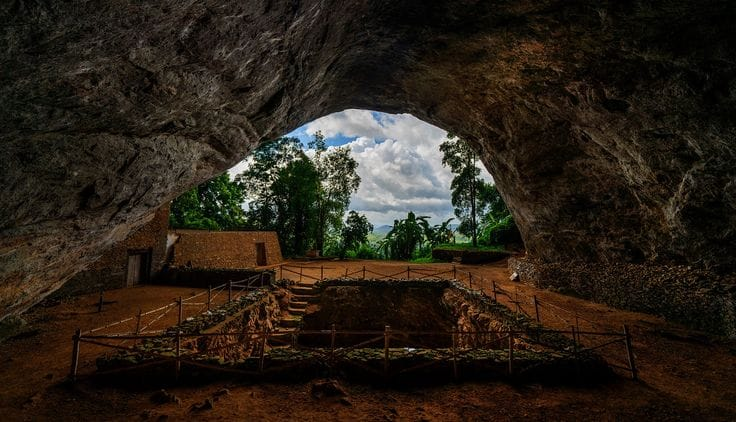
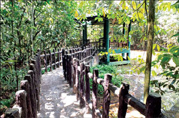
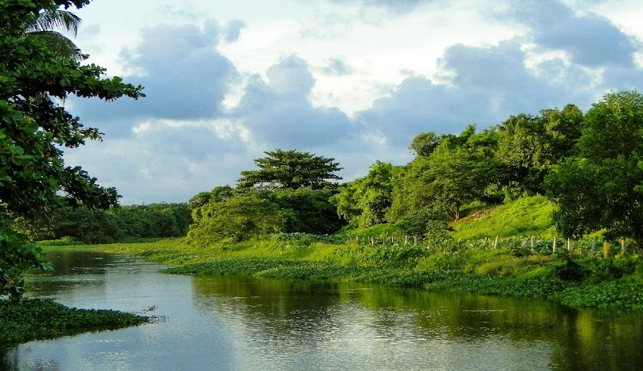
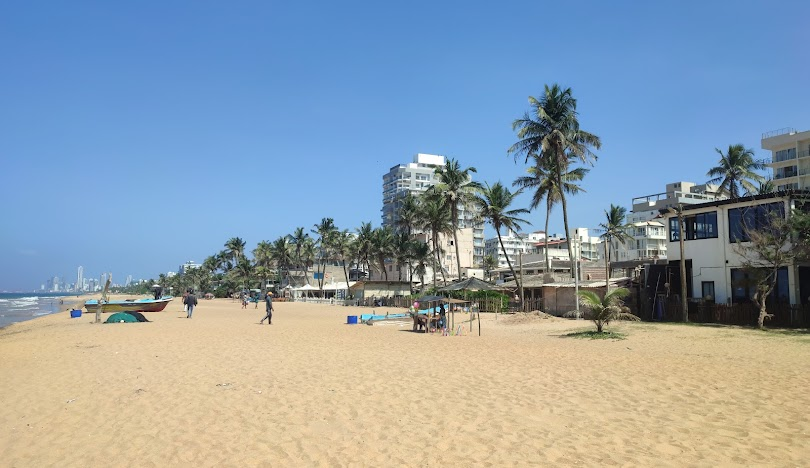
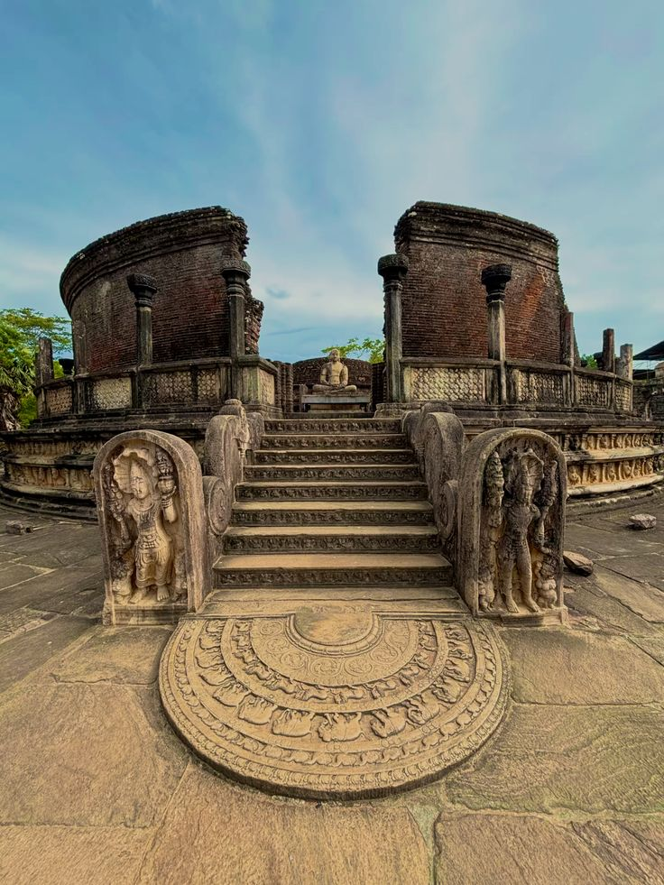
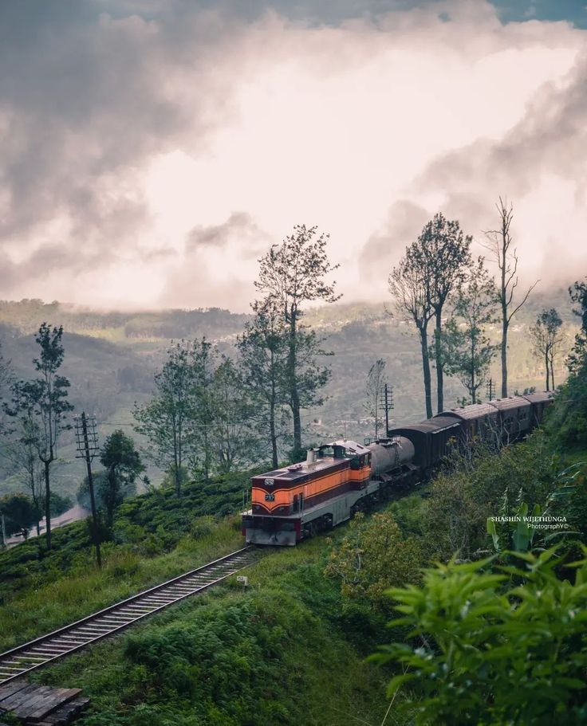

Beautiful Places of Sri Lanka
WESTERN PROVINCE


🛕 Kande Vihara
Kande Viharaya is a famous Buddhist temple in Aluthgama, Sri Lanka. It was built in 1734 and is well known for its large sitting Buddha statue, which is over 160 feet tall. The temple is an important religious place where many people come to worship and seek blessings.
Location: Kandavihara Yati Rd, Beruwala, kalutara District
From Colombo: 60–63 km



🛕 Pahiyangala
Pahiyangala Cave is a famous historical cave in Bulathsinhala, Sri Lanka. It is one of the largest natural caves in Asia and is believed to be over 37,000 years old. Ancient human remains were discovered here, making it an important archaeological site.
Location: Bulathsinhala, Kalutara District, Western Province
From Colombo: ~90 km


🌊 Oruwella Beach
Oruwella Beach is a quiet, scenic stretch of golden sand near Balapitiya on the south‑west coast. It’s perfect for relaxing, swimming, watching sunsets, and enjoying a calm beach vibe with fewer crowds than some other beaches
Location: Balapitiya, Sri Lanka
From Colombo: 85 km – 95 km


🌿 Beddagana Wetland Park
Beddagana Wetland Park is a peaceful nature reserve near Colombo where you can walk through lush wetlands, see birds, butterflies, and enjoy a calm natural environment — a great escape from the city bustle.
Location: Baddagana Road, Sri Jayawardenepura Kotte, Colombo District
From Colombo: 8 km – 12 km



🌿 Horagolla National Park
Horagolla National Park is a small and peaceful park near Nittambuwa, Sri Lanka. It has beautiful trees, a small lake, and wildlife like birds and monkeys. It is a calm place, ideal for relaxing and enjoying nature. 🌿
Location:Nittambuwa, Sri Lanka
From Colombo: 40 km–45 km



🌊 Dehiwala-Mount Lavinia
Dehiwala–Mount Lavinia is a coastal suburb near Colombo in Sri Lanka. It is famous for the beautiful Mount Lavinia Beach and the historic Mount Lavinia Hotel. The area is also known for the Dehiwala Zoological Garden and is a popular place for tourists and local visitors
Location: Dehiwala–Mount Lavinia, Colombo District, Western Province
From Colombo: 10 km
CENTRAL PROVINCE


⛰️ Piduruthalagala
Pidurutalagala is the highest mountain in Sri Lanka, with a height of 2,524 m. It is located near Nuwara Eliya and is known for its cool climate and forest-covered peak.
Location:Pidurutalagala , Near Nuwara Eliya , Central Province
From Colombo: 180 km


🌿 Hatton
Hatton is a town in the Central Province of Sri Lanka, known for its tea plantations and scenic hill country landscapes. It is also a key gateway to Adam’s Peak, attracting many pilgrims and tourists.
Location: Hatton, Central Province
From Colombo: 130 km


🌊 Nawalapitiya
Nawalapitiya is a charming town located in the central highlands of Sri Lanka. It's known for its lush tea plantations, cool climate, and scenic beauty. The town offers a peaceful retreat from the hustle and bustle of city life.
Location: Nawalapitiya, Kandy District, Central Province
From Colombo: 110 km
SOUTHERN PROVINCE


🌊 Galle
Galle is a historic coastal city in southern Sri Lanka. It is famous for the Galle Fort, a UNESCO World Heritage Site built during the Portuguese and Dutch colonial periods. The city is known for its beautiful beaches, colonial buildings, and rich cultural history.
Location: Church St, Galle 80000, Sri Lanka
From Colombo: 120 km


🌊 Unawatuna
Unawatuna is a beautiful coastal town near Galle in southern Sri Lanka. It is famous for its golden sandy beach, clear blue water, and relaxed tropical atmosphere. Unawatuna is a popular place for swimming, snorkeling, and enjoying stunning sunsets.
Location: Unawatuna, Galle 80600, Sri Lanka
From Colombo: 125 km


🌊🐟 Thangalla
Thangalla is a quiet coastal village near Galle in southern Sri Lanka. It is known for its serene beaches, calm waters, and traditional fishing community. Thangalla offers a peaceful escape where visitors can enjoy the natural beauty of the coastline and experience local culture.
Location: Thangalla, Galle 80600, Sri Lanka
From Colombo: 135 km
NORTHERN PROVINCE


🛕 Yapanaya
Jaffna (Yapanaya) is a historic city in the Northern Province of Sri Lanka. It is known for its rich Tamil culture, famous temples such as Nallur Kandaswamy Temple, and beautiful lagoons. Jaffna is an important cultural and economic center in the northern part of the country.
Location: Jaffna City, Jaffna District, Northern Province
From Colombo: 398 km


🛕 Nagadeepaya
Nagadeepaya is a historic site in Sri Lanka, known for its ancient temples and cultural significance. The area is rich in history and offers a glimpse into the region's past.
Location: Nagadeepa Rajamaha Viharaya, Nainativu Island, Jaffna District, Northern Province
From Colombo: 300 km


🌊 Mannar
Mannar is a beautiful coastal area known for its pristine beaches and clear waters. It's a great destination for those seeking a peaceful retreat and stunning natural scenery.
Location: Mannar Town, Mannar District, Northern Province
From Colombo: 280 km
EASTERN PROVINCE


🌊 Nilavela
Nilavela is a beautiful place in the Eastern Province of Sri Lanka. It is known for its scenic landscapes and cultural significance. The area is a popular destination for tourists and locals alike, offering a peaceful retreat from the hustle and bustle of city life.
Location:Nilaveli Beach, Nilaveli, Trincomalee District, Eastern Province, Sri Lanka.
From Colombo: 270-300 km


🌴 Battiacola
Batticaloa is a coastal city in the Eastern Province of Sri Lanka. It is famous for the beautiful Batticaloa Lagoon, beaches, and the unique “singing fish” phenomenon. The city also has historical attractions like the Dutch Fort and lighthouse.
Location: Batticaloa, Eastern Province, Sri Lanka.
From Colombo: 310 km


🌊 Arugambay Beach
Arugam Bay is a famous beach on the east coast of Sri Lanka. It is one of the best surfing destinations in the world and is popular for its beautiful beaches, waves, and relaxed coastal atmosphere.
Location: Arugam Bay, Pottuvil, Ampara District, Eastern Province
From Colombo: 320 km
NORTH WESTERN PROVINCE


🌊 Kalpitiya
Kalpitiya is a beautiful coastal area in the Puttalam District of Sri Lanka. It is famous for its beaches, lagoon, dolphin and whale watching, and water sports such as kite surfing. Kalpitiya is also known for its natural beauty and peaceful environment.
Location:Kalpitiya, Puttalam District, North Western Province
From Colombo: 170 km


⛰️ Kabaragala
Kabaragala is one of the highest mountains in the Eastern Province of Sri Lanka. It is known for its natural beauty, forest surroundings, and scenic viewpoints. The area is popular for hiking and enjoying panoramic views of the surrounding countryside.
Location: Kabaragala Mountain, Ampara District, Eastern Province
From Colombo: 320 km


🌊 Chilaw
Chilaw is a coastal town in the North Western Province of Sri Lanka. It is well known for the historic Munneswaram Temple, beautiful beaches, and fishing industry. Chilaw is also a popular religious and cultural destination.
Location: Chilaw, Puttalam District, North Western Province
From Colombo: 80 km
NORTH CENTRAL PROVINCE


🛕 Anuradhapuraya
Anuradhapuraya is one of the most important ancient cities in Sri Lanka. It was the first capital of the country and is famous for its ancient stupas, temples, and the sacred Sri Maha Bodhi tree. It is also a UNESCO World Heritage historical site.
Location:Anuradhapura, Anuradhapura District, North Central Province
From Colombo: 205 km



🛕 Polonnaruwa
Polonnaruwa is an ancient city and the second historical capital of Sri Lanka. It is famous for well-preserved ruins, temples, statues, and the large Parakrama Samudraya reservoir. Polonnaruwa is also a UNESCO World Heritage cultural site.
Location: Polonnaruwa, Polonnaruwa District, North Central Province
From Colombo: 230 km


🛕 Mihinthalaya
Mihinthalaya (Mihintale) is an important Buddhist religious site in Sri Lanka. It is believed to be the place where Buddhism was first introduced to Sri Lanka by Arahat Mahinda. The area has ancient stupas, temples, and beautiful mountain views.
Location: Mihintale, Anuradhapura District, North Central Province
From Colombo: 210 km
UVA PROVINCE


🌄 Ella
Ella is a charming hill town in Sri Lanka’s Central Province, known for lush tea plantations, scenic viewpoints, and trekking spots like Ella Rock and the Nine Arches Bridge.
Location:Ella, Badulla District, Uva Province
From Colombo: 200 km


🌊 Rawana Falls
Rawana Falls is a picturesque waterfall near Ella, known for its height and scenic surroundings. It is a popular spot for visitors and trekkers exploring the region.
Location:Rawana Falls, Ella, Badulla District, Uva Province
From Colombo: 200 km



🍃 Haputale
Haputale is a serene hill town surrounded by tea estates. It is famous for Lipton’s Seat, panoramic views, and a cool climate perfect for nature walks.
Location:Haputale, Badulla District, Uva Province
From Colombo: 210 km
SABARAGAMUWA PROVINCE


🐘 Udawalawe
Udawalawe is a popular national park in Sri Lanka, famous for its large elephant population and diverse wildlife. It is ideal for safari tours, bird watching, and experiencing Sri Lanka’s natural beauty.
Location:Udawalawe National Park, Udawalawe, Sabaragamuwa Province
From Colombo: 160 km


🌄 Balangoda
Balangoda is a town in the Sabaragamuwa Province of Sri Lanka. It is known for its ancient rock shelters, prehistoric paintings, and the beautiful landscapes of the surrounding hills and valleys. The town also has several historical sites and cultural attractions.
Location:Balangoda, Ratnapura District, Sabaragamuwa Province
From Colombo: 150 km


🌊 Belihuloya
Belihuloya is a picturesque village in the Sabaragamuwa Province of Sri Lanka, known for its lush green valleys, rivers, and waterfalls. It is a popular destination for nature lovers, trekking, and eco-tourism.
Location: Belihuloya, Ratnapura District, Sabaragamuwa Province
From Colombo: 180 km